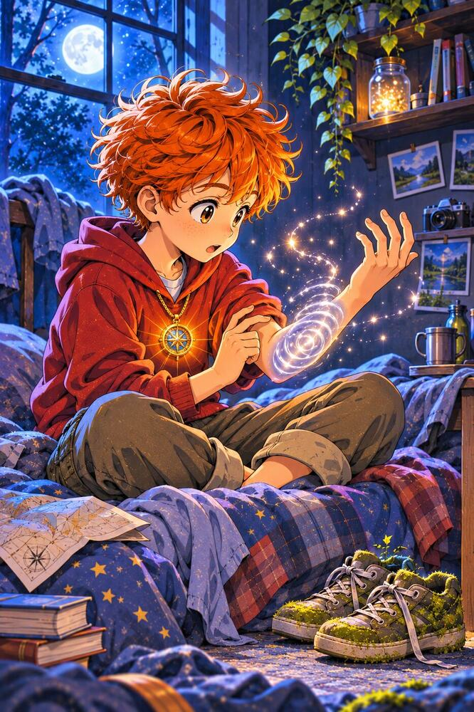

Volume 1
Jasper and the Mark of the Wind
Jasper was eleven when the wind started whispering his grandmother's name.
Then came the growth spurt. The five slices of toast. The three bullies who ended up in a hedge without him laying a finger on them. And the dream where a storm-eyed grandad he hasn't seen since he was four hands him an old compass that's still in his hand when he wakes up.
The compass points to the Forest. The Forest leads to an ancient oak, a very rude talking boar, and a secret as old as his grandad: Jasper is the next Ginganinja, keeper of the Mark of the Wind.
But something else has been waiting too. Something old, and empty, and wearing stolen fire. And it wants what's coming to Jasper.
Feelings first. Then wind. Never the other way round.
- From the Forest of Dean to Mallorca
- Full-colour illustrations
- 96 pages, paperback
- Also on Kindle
£12.99